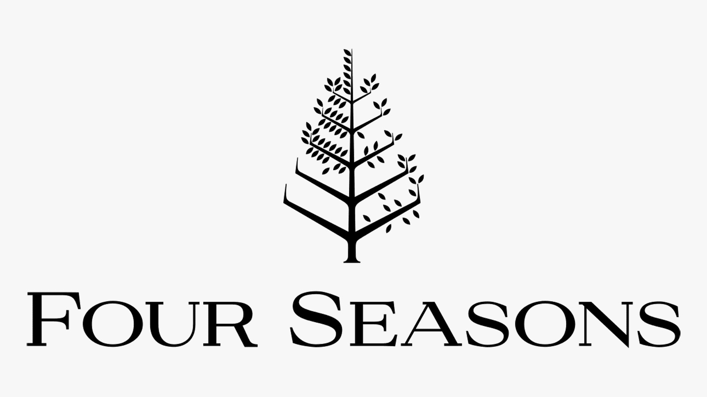
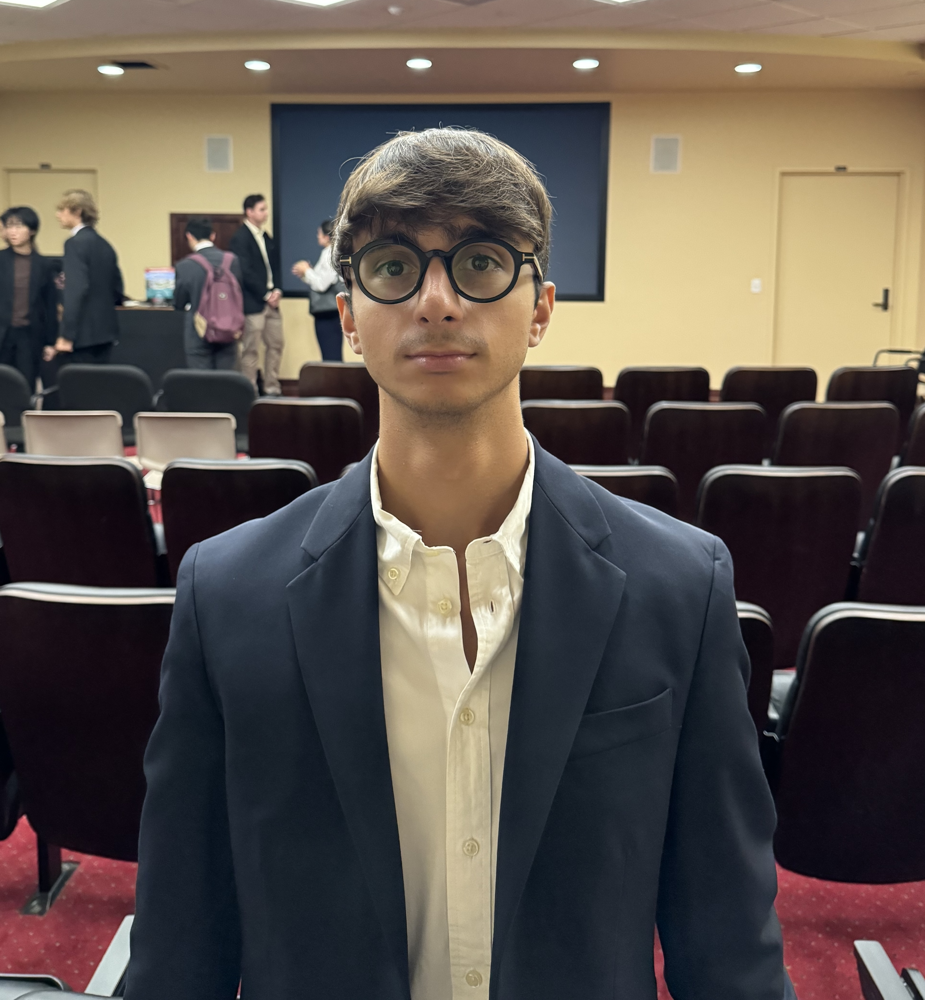

Home
Hello everyone!
I am a Master’s student in Management at Luiss Guido Carli University, with a keen focus on entrepreneurship and innovation.
I am currently enhancing my academic experience as an exchange student at San Diego State University. This immersive experience has broadened my horizons, providing me with new skills, knowledge, and an extensive network of global connections. Studying abroad has sharpened my adaptability, enriched my cross-cultural competence, and exposed me to diverse perspectives, all of which I believe are essential in today's interconnected business landscape.
In addition to my academic pursuits, I have also delved into the world of practical experience. I had the privilege of serving as a Junior HR Intern at "Natuzzi" during a transformative three-month internship. In this role, I took charge of the management and optimization of various HR processes within the organization. My responsibilities included ensuring the efficiency and alignment of HR practices with the overarching objectives of the company.
During this internship, I had the opportunity to strengthen my HR management skills, particularly in terms of organizational proficiency. Moreover, I gained hands-on experience with the SAP platform for HR management, solidifying my technical capabilities.
As I advance in my academic journey and prepare to embark on my professional career, I am confident that the combined skills, insights, and global perspectives acquired through my studies and practical experience will position me as a dynamic contributor to the business world and beyond.
I eagerly anticipate the opportunity to apply my skills and knowledge in various settings, forging meaningful connections, and making a positive impact on both organizations and communities.


Coursework
Last week, I was privileged to attend an event hosted by the esteemed "Four Seasons" Hotel chain at SDSU University. The event provided an enlightening glimpse into their corporate ethos and was held in a cordial yet professional setting on the university terrace at 5 PM, complete with an impressive welcome banquet.
Accompanied by my peers, Roberto and Filippo, we engaged with the Four Seasons' recruitment team, including an exceptionally ambitious individual only two years our senior. Our discourse spanned several pertinent subjects, notably their approach to personnel management and strategies pertinent to the hospitality industry.
A question I posed concerned their response to the COVID-19 pandemic and its repercussions on the industry, which has been significantly impacted. The Four Seasons' representatives detailed how the company strategically scaled back hiring to mitigate the financial fallout from the crisis.
What resonated with me was the company's philosophy of treating its employees as an extended family. The significance of customer feedback was another aspect emphasized by the recruiters. They shared that Four Seasons diligently solicits client evaluations via email, underscoring their commitment to continuous enhancement.
A particularly enlightening insight was their focus on recruiting university students, reflecting a trust in the potential and innovation of the new generation. This approach suggests promising employment prospects in the field for us as students, highlighting the company's forward-thinking stance.
Overall, the event was a valuable experience that broadened my understanding of the hospitality sector and provided a unique networking opportunity with industry professionals.
MINDMAP SUMMARY
In the center of the mind map, the core passion is identified as "entrepreneurship," encompassing key elements such as leadership, strategic planning, and financial analysis.
Considering this passion, potential career options in the hospitality and tourism industry may include roles as a Hotel Owner, Real Estate Manager, or Project Manager. These roles align with the entrepreneurial spirit and offer opportunities for innovation and leadership.
Core values that are non-negotiable include "integrity" and "collaboration," reflecting a commitment to ethical conduct and effective teamwork. Additionally, "financial responsibility" and "flexibility" are values that are highly valued and should not be compromised.
In terms of career goals, in the short term (6-9 months), the focus is on securing an internship, expanding networking connections, and enhancing the resume. In the longer term (1-3 years), the aspiration is to attain a management position within the industry, specialize in a specific area, and gain international experience.
Top strengths identified at present include proficiency in "public relations," "adaptability" to changing circumstances, and effective "problem-solving" abilities.
Desired strengths for improvement involve a commitment to "continuous learning" and "skills development." Seeking mentorship and gaining practical experience are prioritized to fill gaps in knowledge and abilities.
Recognized gaps in personal development encompass the "Financial Literacy Gap" and the need to improve "Work-Life Balance."
Regarding role models, Elon Musk stands out as an admired figure due to his relentless pursuit of innovation and his ability to transform visionary ideas into tangible reality. His impact on the world through the transformation of electric vehicles, renewable energy, and space exploration aligns with the goal of pushing humanity toward a sustainable and multi-planetary future.